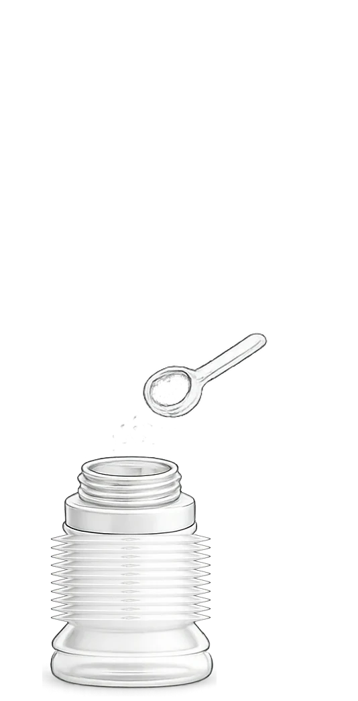
1
Dosez
Placez la dose de poudre dans BIBEON replié.
Jusqu’à 8 doses.
Fabriqué en France · Testé par le LNE
Les sorties d’avant
Biberons rigides. Boîtes doseuses.
Le contenu change.
Le volume, jamais.
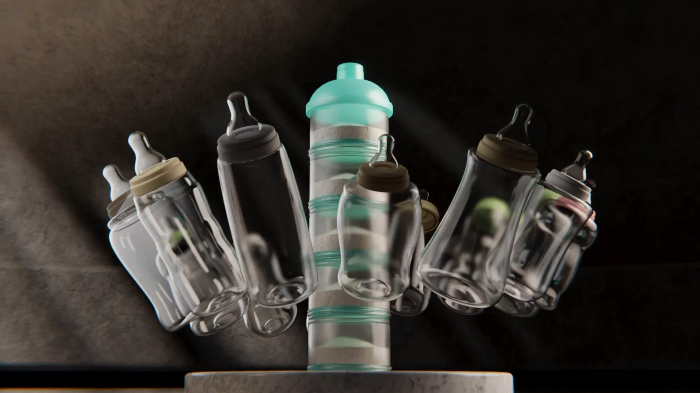
Ce sont les parents qui le disent.
La révolution !
« Je l’avais pour ma fille il y a 6 ans, et bien la révolution ! […] Malgré qu’il faut plier et déplier, il tient le coup, c’est super ça, je le conseille. »
Un indispensable.
« C’est un super biberon, un indispensable, je l’utilise très souvent car il est pratique. Surtout quand on se déplace. Ce format est parfait. On peut l’emmener partout. »
Voir tous les avis ConsoBaby & Kid
Orthographe et ponctuation rétablies, les propos ne sont pas modifiés · […] signale un passage non reproduit.
Sans doseur
L’eau au moment du repas.
On a changé le biberon.
On a supprimé tout le reste.
Tout dedans.
Rien autour.
Évolutif
Il s’élève à la demande.
150 ml
4 soufflets dépliés
Le biberon toujours prêt
Pré-dosé ici.
Nourrissez partout.
Replié
À l’abri de la lumière :
dans un sac à main,
ou dans son pochon.
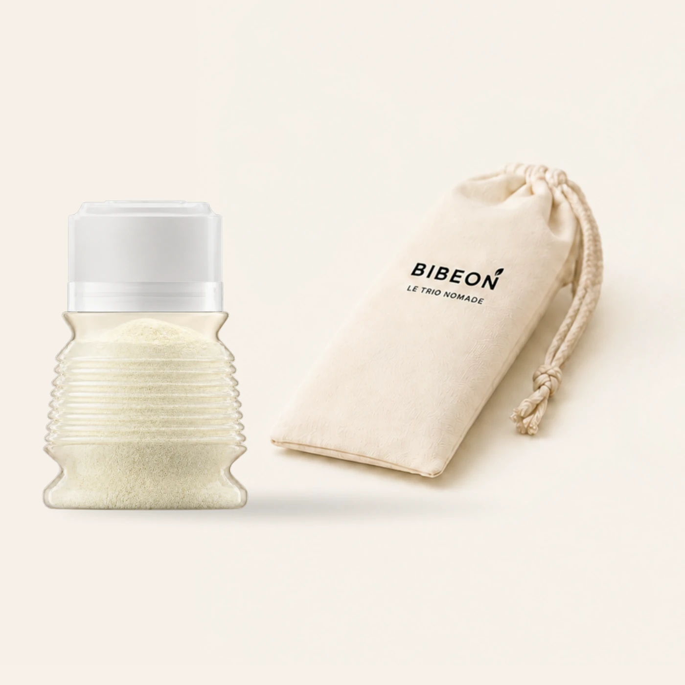
Une paroi accidentée
Mélangée vigoureusement.
Un lait sans grumeaux.
Tout simplement.
Les 3 gestes

Placez la dose de poudre dans BIBEON replié.
Jusqu’à 8 doses.
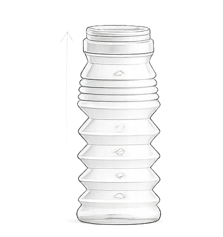
Desserrez le bloc bague-tétine, sans le retirer.
Dépliez BIBEON entièrement.
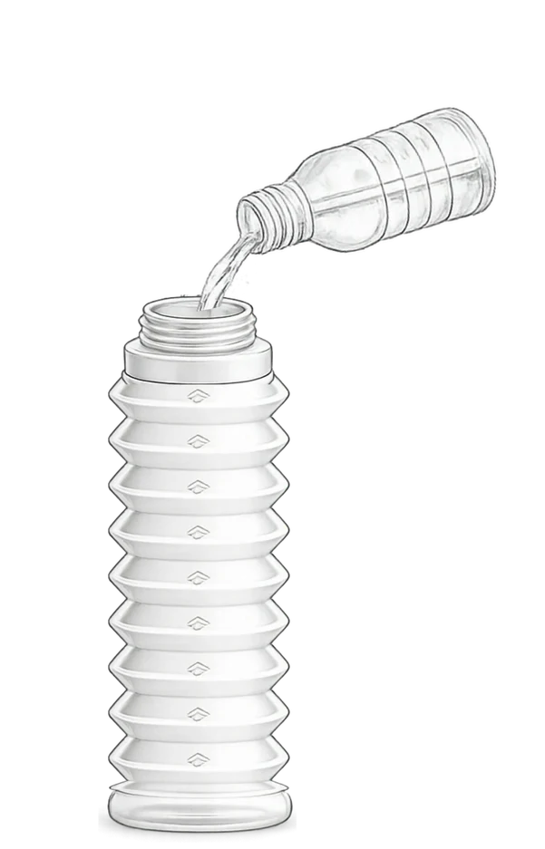
Versez l’eau jusqu’à la graduation voulue.
Refermez. Secouez.
Tout comprendre en 30 secondes
Le dépliage, la dose, l’eau, la tétine, le repliage, le nettoyage et le séchage — dans l’ordre, sans coupure.
Bonus · l’anti-air
On abaisse les soufflets vides jusqu’au niveau du lait.
Moins d’air dans le biberon.

Prêt à partir léger ?
Notre histoire
30 000 à l’heure. Puis une autre urgence s’impose.
01
30 000
à l’heure
Une fabrication passée à l’échelle industrielle.
Découvrir la première vie de BIBEON
02
IGAS
L’IGAS s’empare de l’alerte.
Dans ce dossier, elle reconnaît Suzanne de Bégon comme lanceuse d’alerte.
Découvrir le parcours de Suzanne de Bégon
03
BIBEON revient.
Durable.
Végétal.
0 résidu détecté.
Testé par le LNE.
La même idée. Une nouvelle exigence.
Découvrir le BIBEON d’aujourd’hui
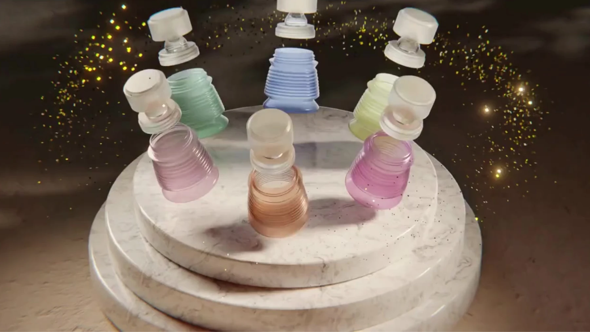
Composition & sécurité attestée
« Un biberon n’est pas un jouet. En l’absence d’AMM — d’autorisation de mise sur le marché — la conformité repose sur la responsabilité du fabricant, sa déclaration et les preuves qui l’étayent. J’ai voulu aller au bout de cette responsabilité. »
50 %
végétal
Sur les 23 g du BIBEON, 12 g sont d’origine végétale. Sans OGM ni gluten.
Découvrir la composition
0
résidu détecté
Essais de migration globale : résultats inférieurs au seuil analytique indiqué dans le rapport.
Voir les résultats
LNE
testé et contrôlé
Laboratoire national de métrologie et d’essais · dossier P143418.
Voir les tests de migration LNE
Composition
trois matières
Polypropylène · matière d’origine végétale · silicone alimentaire.
Découvrir les matières
La règle qui commande tout
Un matériau au contact du lait doit être agréé pour le contact alimentaire.
Le LNE le rappelle en note de son rapport. C’est cette exigence qui a dicté le choix de chacune des trois matières du BIBEON — et la tétine ne fait pas exception : elle est en silicone alimentaire.
Silicone alimentaire ou médical ? La déclaration de conformité
Entre leurs mains
« Mon fils d’un an n’était habitué qu’à une seule marque, et il a très bien accepté celui-ci — je crois que la forme y est pour beaucoup. »
Tétine en silicone alimentaire · col étroit interchangeable · débit 6 mois et plus
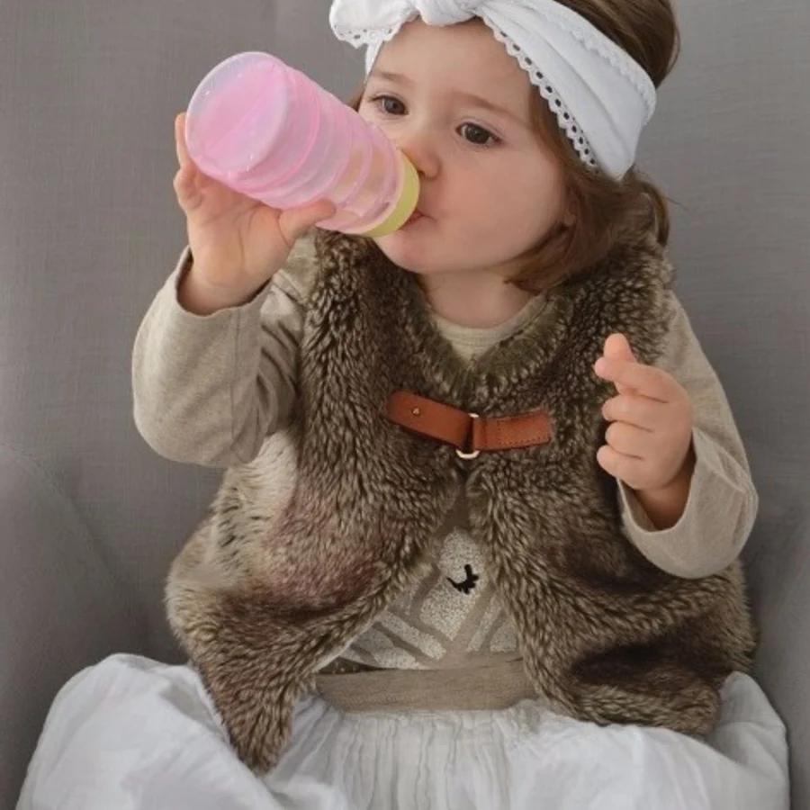
Vingt-trois grammes
Sans effort pour leurs petits bras.
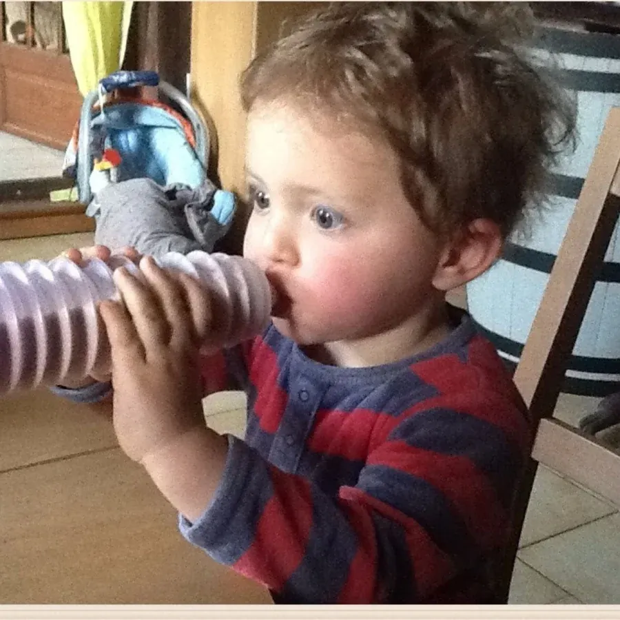
Les soufflets
Les creux offrent naturellement une prise aux petits doigts.
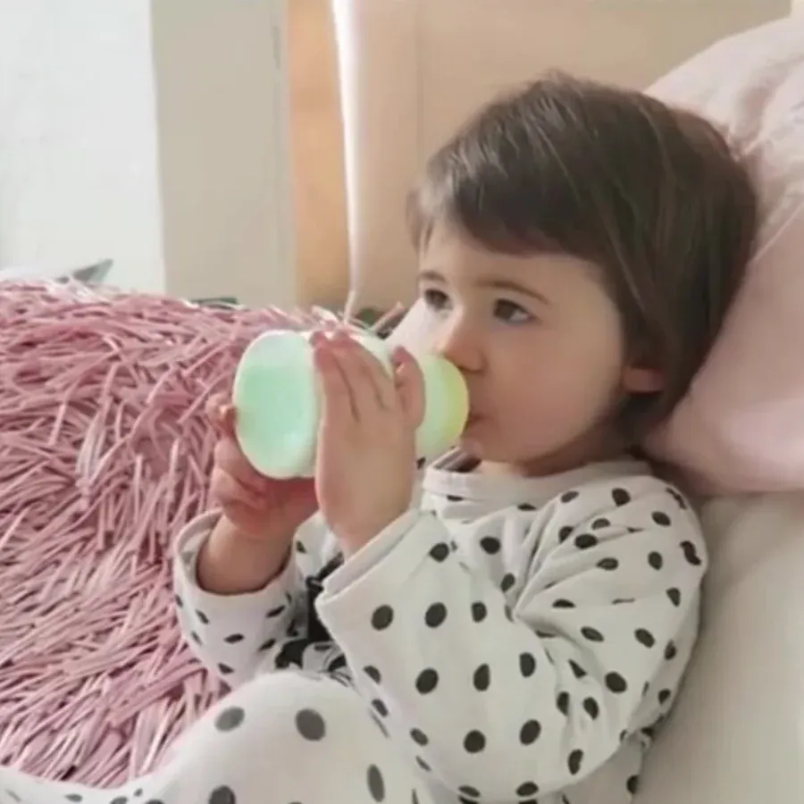
Prise en main
Il tient bien dans leurs mains et ne leur glisse pas des doigts.
Il n’a rien eu à apprendre.
Il l’a pris spontanément.
4,4/ 5
65 avis ConsoBaby
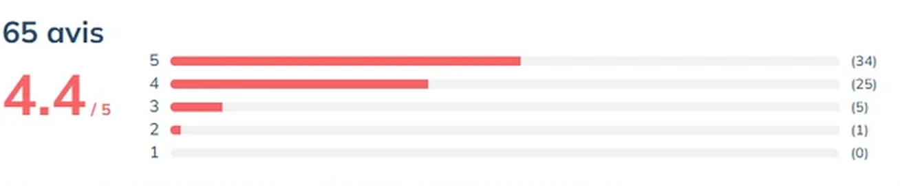
Badge ConsoBaby&Kid — attribué aux seuls produits notés au moins 4,2 sur 5, avec un minimum de 30 avis.
Avis publiés sur ConsoBaby&Kid, premier site français d’avis de parents, sans que nous puissions les modifier.
Voyager avec bébé
Une sortie au parc, une journée chez la nounou ou un long-courrier : les gestes que l’on ne fait plus sont les mêmes.
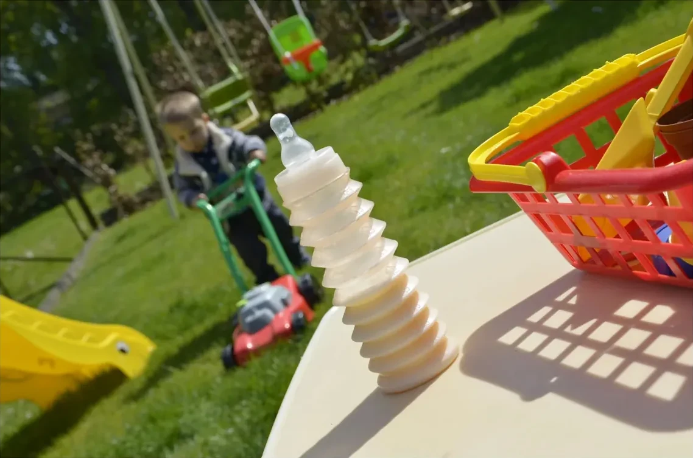
Pas de doseur
La dose est déjà dans le BIBEON.
Pas de transvasement
On ajoute l’eau au moment du repas.
Moins à emporter
Replié, BIBEON se glisse dans le sac.
Ce qui revient le plus souvent
C’est la question que se posent la plupart des parents avant d’acheter. Les témoignages vont dans le même sens : des enfants habitués à une seule marque depuis un an l’ont adoptée sans difficulté.
Elle est en silicone alimentaire. Aucun silicone médical n’est utilisé dans BIBEON. Elle est à col étroit et interchangeable : on la retire, et on peut la remplacer par une autre tétine à col étroit. Son débit est de 6 mois et plus. Silicone alimentaire ou médical : la différence
BIBEON se replie à la taille d’un petit pot : replié, il tient dans une poche de sac à main. Vous y placez les doses de lait en poudre avant de partir, vous le dépliez au moment du repas et vous ajoutez l’eau. Plus de boîte doseuse à transporter à côté, et plus de sac à langer à sortir pour une course d’une heure.
Oui. Replié et vide, il prend la place d’un petit étui. Le lait en poudre voyage à sec à l’intérieur et l’eau s’ajoute après les contrôles, ce qui évite la question des liquides en cabine. Les règles applicables aux aliments pour bébé varient selon les aéroports et les compagnies : renseignez-vous avant le départ.
Jusqu’à 8 doses, dans le biberon totalement replié. C’est d’ailleurs la seule bonne position pour doser : la poudre reste à l’abri de l’air.
330 ml une fois entièrement déplié. Le corps est gradué jusqu’à 300 ml par paliers de 30 ml — un soufflet, une graduation. Les 30 ml restants, entre le dernier soufflet et la bague, ne sont pas gradués : 330 ml utiles, 300 ml gradués.
La tétine en silicone fournie est à débit « 6 mois ». BIBEON accompagne les bébés de la diversification jusqu’à environ 3 ans.
Au goupillon, à l’eau chaude savonneuse, puis rinçage. Le lave-vaisselle est interdit. Pour la stérilisation, employez les pastilles de stérilisation à froid. Jamais d’ébullition. Pour réchauffer au bain-marie, au micro-ondes ou au chauffe-biberon, retirez toujours la bague, la tétine et le capuchon.
Le corps, la bague et le capuchon ont fait l’objet d’essais de migration globale au LNE dans des simulants alimentaires : tous les résultats sont inférieurs au seuil analytique de 6 mg/kg indiqué dans le rapport. La tétine est en silicone alimentaire — et non en silicone médical — et relève de sa propre documentation de conformité.
En France, en région lyonnaise, du moule au flacon. La bague et le capuchon sont en matière d’origine végétale, sans OGM ni gluten.
En deux temps, et le premier soufflet est le seul qui demande un geste. Arrondissez le flacon comme une banane : le premier soufflet se libère d’un côté. Recommencez de l’autre côté, il est déplié. Ensuite c’est toujours le même mouvement — vous pincez le soufflet voisin, les doigts tout près de lui, et vous l’étirez d’un côté puis de l’autre. Le pliage suit exactement la même logique, en plus facile.
Comme un biberon ordinaire. Et mieux qu’un biberon ordinaire : s’il reste une particule, repliez les soufflets et le fond remonte à portée de doigt. Vous atteignez directement ce que la brosse d’un biberon rigide n’atteint jamais.
Le séchage compte, parce que le pré-dosage suppose un flacon parfaitement sec — et cela peut devenir urgent en vacances ou à l’hôtel, quand le biberon doit repartir tout de suite. Là encore, repliez les soufflets : les dernières gouttelettes deviennent accessibles au doigt, et un tissu propre à usage unique suffit à les prendre.
Parce que la paroi n’est pas lisse. On recommande habituellement de verser la poudre en second pour éviter les grumeaux dans un flacon lisse. Ici, le soufflet travaille pour vous : en mélangeant, la poudre rencontre le creux de chaque anneau et s’y désagrège. L’architecture de la paroi fait le travail que le geste devait faire.
Trois conditions, et elles ne se négocient pas. Le flacon doit être parfaitement sec. La bague doit être vissée à fond. Et la tétine doit être placée verticalement, son orifice contre le toit du capuchon. Le pochon opaque fourni protège ensuite l’ensemble de la lumière.
Posez le capuchon directement sur l’orifice de la tétine, sans le lâcher. Puis enfoncez la tétine à l’intérieur d’elle-même, en tenant le capuchon bien vertical et d’un geste franc. C’est la fermeté du geste qui fait tout — hésiter ne marche pas.
Oui, à une seule condition : le diamètre. La bague est à col étroit, la tétine de remplacement doit l’être aussi. Une tétine à col large ne peut pas s’y insérer. Son débit est de 6 mois et plus.
Le flacon est recyclable. La bague et le capuchon sont en matière d’origine végétale. La tétine, elle, ne se recycle pas : le silicone ne se recycle pas.
Une question sur le produit, une demande de revendeur, une commande en volume : appelez, on répond.